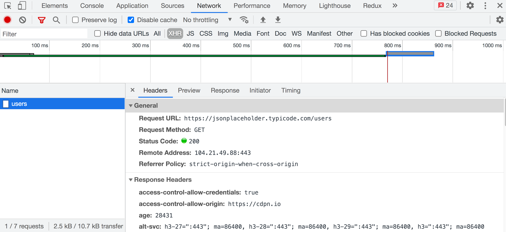

Înainte ca utilizatorul să vadă conținutul site-ului pe ecran, browserul face o cerere către server pentru a obține tocmai acest conținut. Fișierul HTML, imaginile, stilurile și scripturile provin de la server prin protocolul HTTP - un set de reguli și convenții utilizate la transferul de date prin rețea.

HyperText Transfer Protocol - un protocol utilizat pe scară largă pentru transferul de resurse web de diferite tipuri: html, css, javascript, imagini, audio și video etc.
HTTP se bazează pe structura client-server și un model de cerere-răspuns în care aplicația client inițiază o conexiune, formează o cerere și o trimite către server, după care serverul procesează acest lucru, formează un răspuns și îl trimite înapoi clientului. Comunicarea între ele se realizează printr-o serie de solicitări HTTP intercalate și răspunsuri HTTP.

Solicitarea(request-ul) are loc în mai multe etape:
HyperText Transfer Protocol Secure - este o setare add-on peste protocolul HTTP în care toate comunicațiile dintre client și server sunt criptate pentru a fi securizate. Oferă protecție împotriva atacurilor de tip MITM (Man-in-the-Middle) . Datele sunt transmise prin protocoale criptografice SSL sau TLS.

Când se comunică printr-o conexiune HTTP normală, toate datele sunt transmise ca text și pot fi citite de oricine are acces la conexiunea dintre client și server. Dacă utilizatorii cumpără online și completează un formular de comandă care conține informații despre cardul de credit, detaliile lor financiare sunt mult mai ușor de furat dacă sunt transmise în text simplu. Cu HTTPS, datele vor fi criptate, iar hacker-ul nu le va putea decripta, deoarece decriptarea necesită acces la cheia privată care este stocată pe server.
BINE DE ȘTIUT
Protocolul HTTPS asigură faptul că informațiile despre clienți, cum ar fi
codul cardului de credit, sunt criptate și nu pot fi interceptate atunci
când sunt decriptate. Vizitatorii pot confirma că site-ul este securizat,
uitându-se la pictograma din stânga barei de adrese. Conexiunile
securizate sunt marcate cu o pictogramă de lacăt(doua chei inverse una sub
alta).
Serverul este un calculator cu un software special. Backend-ul este un program situat pe un server care poate procesa solicitările HTTP primite și are un set de acțiuni gata făcute pentru anumite solicitări.

API (application programming interface) - un set de reguli de comunicare bine definite între diferite componente software. Interfața descrie ce i se poate cere programului să facă și care va fi rezultatul.
REST (representational state transfer) - un stil de arhitectură back-end bazat pe un set de principii care descriu modul în care sunt definite și abordate resursele de rețea.
REST API - backend-ul este construit pe principiul REST. Servește ca strat între aplicația web și baza de date. Are o interfață standard pentru accesarea resurselor. Funcționează ca un site web, trimitem o solicitare HTTP de la client la server, iar ca răspuns, în loc de o pagină HTML, primim date în format JSON.
Un serviciu REST necesită ca un client să facă o cerere de adăugare, preluare sau modificare a datelor. Cererea poate fi constituită din următoarele părți:
| Entry | Description |
|---|---|
| Metoda HTTP | Specifică ce operație trebuie efectuată. |
| HTTP-headers | Permite clientului să trimită informații adiționale despre cerere. |
| Path | Calea către resursă. Căile disponibile sunt descrise în documentația backend. |
| Body | Blocul request-ului ce conțin date. |
Există mai multe metode HTTP de bază pentru a lucra cu un serviciu REST.
| Method | Description |
|---|---|
| POST | Creează o resursă nouă |
| GET | Obține un set de resurse sau o singură resursă |
| PUT | Actualizează o resursă existentă sau crează o nouă resursă |
| PATCH | Actualizează o resursă existentă |
| DELETE | Șterge resursa |
Anteturile conțin informații de serviciu legate de conținutul cererii. De exemplu, tipul de conținut pe care clientul îl poate procesa într-un răspuns de la server (Accept) sau care descrie tipul de resursă pe care clientul o trimite către server sau serverul o trimite clientului (Content-Type).
Accept: text/html
Content-Type: application/json
MIME types - sunt opțiunile tipului de conținut. Se folosesc pentru a specifica conținutul cererii și al răspunsului, fiind formate dintr-un tip și un subtip, separate printr-o bară oblică /. De exemplu, un fișier text care conține HTML ar fi fost descris ca text/html. Dacă fișierul conține CSS, acesta va fi descris ca text/css. Datele de tip JSON vor fi descrise ca application/json. Dacă clientul așteaptă text/css, dar primește application/json, nu va putea recunoaște și procesa conținutul răspunsului.
Un request trebuie să conțină calea către resursa pe care se efectuează operația. Căile disponibile (puncte finale, resurse) sunt descrise în documentația backend.
GET https://bookstore.com/api/orders
Accept: application/json
O astfel de cale specifică în mod explicit resursa, chiar dacă nu ați mai văzut-o până acum. Este ierarhică și descriptivă. Efectuăm un request pentru a obține o colecție de orders.
GET https://bookstore.com/api/orders/289
Accept: application/json
Ultima parte a căii se numește parametru dinamic și este descrisă în documentație ca /resource/:parameter. Resursa rămâne nechimbată deoarece este calea către întreaga colecție, doar valoarea parametrului se modifică pentru fiecare dintre elementele sale.
La o cerere, serverul trimite un răspuns care conține un cod de stare pentru a informa clientul despre rezultatul operației. Codurile sunt împărțite în grupuri.
| Group | Description |
|---|---|
| 1XX | Au un scop informativ |
| 2XX | Codurile de succes a unei operații |
| 3XX | Descrie tot ce are legătură cu redirecționarea (redirect) |
| 4XX | Erori din partea clientului |
| 5XX | Erori din partea serverului |
BINE DE ȘTIUT
Nu este necesar să știm toate codurile din fiecare grup, este suficient
doar să le cunoaștem pe cele mai comune. Restul poate fi găsit întotdeauna
în HTTP status codes guide.
| Code | Description |
|---|---|
| 200 (OK) | Un răspuns standard pentru solicitările HTTP cu succes. |
| 201 (Created) | Un răspuns standard pentru cererea HTTP care a creat cu succes o resursă. |
| 400 (Bad Request) | Solicitarea nu poate fi procesată din cauza sintaxei cererii nevalide sau a unei alte erori pe partea de client. |
| 401 (Unauthorized) | Este necesară autorizarea pentru a accesa resursa. |
| 403 (Forbidden) | Clientul nu are permisiunile necesare de a accesa această resursă. |
| 404 (Not Found) | Resursa nu a fost găsită. Posibil să fi fost ștearsă sau să nu existe încă. |
| 500 (Internal Server Error) | Un răspuns general la o defecțiune neașteptată a serverului. |
Să presupunem că avem o aplicație care ne permite să vedem, să creăm, să edităm și să ștergem clienți și comenzi pentru o librărie mică al cărui backend este găzduit pe bookstore.com/api. Folosind cunoștințele dobândite, vom descrie procesul de cerere-răspuns către backend în termeni de pseudocod.
Dacă dorim să obținem date despre toți clienții, cererea GET va arăta astfel.
GET bookstore.com/api/customers
Accept: application/json
La care serverul ne va trimite un astfel de răspuns.
Status: 200 OK
Content-Type: application/json
Body: Datele tuturor clienților sub forma JSON
Pentru a obține datele unui client, specificăm id-ul acestuia.
GET bookstore.com/api/customers/289 Accept: application/json
La care serverul ne va trimite un astfel de răspuns.
Status: 200 OK
Content-Type: application/json
Body: Datele clientului sub forma JSON
Pentru a adăuga un nou client, efectuăm o cerere POST.
POST bookstore.com/api/customers
Content-Type: application/json
Body: { "username": "Mango", "email": "mango@gmail.com" }
Serverul adaugă un identificator unic și returnează întregul obiect ca rezultat.
Status: 201 Created
Content-type: application/json
Body: { "id": 18674, "username": "Mango", "email": "mango@gmail.com"
}
AJAX (Asynchronous JavaScript and XML) - o metodă de primire sau trimitere a datelor, urmată de actualizarea interfeței în funcție de aceste date, fără a fi necesară reîncărcarea paginii. Datorită acestui fapt, timpul de răspuns este redus și pagina web devine mai interactivă. Acest proces îl putem înțelege în urma unui exemplu de încărcare a datelor.
BINE DE ȘTIUT
În ciuda faptului că XML este prezent în numele tehnologiei, JSON l-a
înlocuit în web-ul modern, iar numele a fost lăsat. AJAX se referă la
orice comunicare cu serverul fără a reîncărca pagina.
Este o interfață încorporată în browser, disponibilă pe obiectul window care conține un set de proprietăți și metode pentru trimiterea, primirea și procesarea resurselor de la server. Metoda fetch() oferă o interfață modernă pentru a face cereri către server, fiind construită pe promise-uri.
Vom crea request-uri către JSONPlaceholder API - un API REST public pentru prototipare rapidă care expune o colecție de utilizatori fake în resursa /users.
fetch("https://jsonplaceholder.typicode.com/users")
.then(response => {
// Response handling
})
.then(data => {
// Data handling
})
.catch(error => {
// Error handling
});
Valoarea promisului returnat de metoda fetch() este un obiect cu informații despre starea răspunsului primit de la server. O instanță a clasei Response, prevăzută cu diverse metode și proprietăți. În funcție de tipul de conținut primit, se folosește o metodă diferită pentru a converti corpul răspunsului în date.
Prima metodă then() verifică starea răspunsului și convertește datele în formatul corect sau aruncă în mod explicit o eroare pentru a gestiona cererea HTTP eșuată în blocul catch().
fetch("https://jsonplaceholder.typicode.com/users")
.then(response => {
if (!response.ok) {
throw new Error(response.status);
}
return response.json();
})
.then(data => {
// Data handling
})
.catch(error => {
// Error handling
});
Exemplul 1
Uitati-va in consola...!
BINE DE ȘTIUT
Acest lucru este necesar pentru ca fetch() să răspundă corect la un cod de
stare ca 404, care din punct de vedere tehnic nu este o eroare, dar nu
este nici un succes pentru client.
În devTools, tab-ul Network afișează toate solicitările HTTP care se fac de pe pagină. Selectând filtrul XHR, rămân doar cererile către backend. După apăsarea butonului din exemplu, după un timp, cererea va fi afișată în listă. Selectându-l, puteți vizualiza informațiile despre request și corpul răspunsului în Headers, Preview și Response.
Fiecare backend este unic, iar în rețeaua world wide web astfel de servere sunt de numărul milioanelor. Pe de altă parte, API-urile REST sunt construite pe o arhitectură standard, însemnând că putem înțelege cum funcționează orice backend, după care, tot ce trebuie să facem este să citim documentația backend-ului pe care dorim să-l utilizăm.
Vom continua să lucrăm cu JSONPlaceholder API. În documentație găsim adresa de URL a resursei pentru a solicita informații despre colecția de utilizatori fake.
https://jsonplaceholder.typicode.com/users
Această cale este formată din următoarele părți:
Dând click pe butonul "Fetch users", vom face o solicitare GET și vom desena o listă de utilizatori, în funcție de datele primite.
Exemplul 1
Uitati-va in consola...!
BINE DE ȘTIUT
Funcția fetchUsers() returnează un promis, așa că adăugăm un lanț de
metode then() și catch() la rezultatul apelului.
Să ne uităm la o greșeală des întâlnită atunci când se utilizează cod asincron - încercarea de a utiliza datele cererii HTTP în afara callback-ului din metoda then(). Programatorul începător încearcă să scrie "rezultatul la fetch" într-o variabilă externă și să-l folosească mai jos în cod, imediat după apelarea metodei fetch().
În afara callback-ului din metoda then() nu există date, deoarece ultimul console.log() va fi executat înainte de sosirea răspunsului de la server. În acest moment, variabila globalVariable este încă undefined. Valoarea promisului de tip fulfilled este disponibilă doar în callback-ul de la then().
Exemplul 1
Uitati-va in consola...!
Parametrii unui request permit să specificăm criterii suplimentare pentru backend. De exemplu, câte elemente ale colecției dorim să obținem. Poate fi necesar în anumite cazuri să adăugăm sortarea după o anumită proprietate a obiectului, să limităm selecția etc. Lista parametrilor, numele lor și valorile posibile depind de backend și sunt specificate în documentație.
Simbolul ? indică începutul parametrilor. Fiecare parametru este o pereche nume=valoare. Simbolul & este folosit pentru a indica un "Și" semantic, separând parametrii din url.
const url = "https://jsonplaceholder.typicode.com/users?_limit=7&_sort=name";
O astfel de solicitare GET va returna o serie de șapte utilizatori (fiind 10 în total) sortați după nume (câmpul name) în ordine alfabetică.
Exemplul 1
Uitati-va in consola...!
Pot exista mulți parametri și nu este convenabil să facem un string lung, atât pentru lizibilitate, cât și pentru modificarea sa ulterioară. La compilarea unui șir de parametri, o instanță a clasei URLSearchParams este creată și inițializată ca un obiect. Rezultatul va fi un obiect special (iterator) cu metode care returnează rezultatul apelării metodei toString() - reprezentarea lui ca șir.
Exemplul 1
Uitati-va in consola...!
În url, proprietățile obiectului vor deveni parametri cu valorile acestora. Opțiunile vor fi separate prin &. Când o valoare este interpolată în șiruri de șablon, aceasta este implicit convertită într-un șir, deci nu este nevoie să apelăm metoda toString() atunci când compunem adresa URL. Să nu uitați să începeți query string-ul cu ?.
Clasa Headers permite să efectuăm diverse acțiuni asupra antetelor de solicitare HTTP și răspuns. Aceste acțiuni includ extragerea, configurarea, adăugarea și eliminarea antetelor.
Exemplul 1
Uitati-va in consola...!
În practică, antetele cererii sunt de obicei doar un obiect cu proprietăți. În acest caz, nu vor exista metode, ceea ce de obicei nici nu este necesar.
Exemplul 2
Uitati-va in consola...!
BINE DE ȘTIUT
Browserele moderne adaugă multe antete implicite, în funcție de operațiune
și de corpul cererii, astfel încât nu este nevoie să specificați de
fiecare dată anteturile standard.
În mod implicit, o solicitare HTTP poate fi făcută numai de pe site-ul curent. Când încercați să solicitați un alt domeniu, port sau protocol, adică să efectuați o solicitare între domenii, browserul dă o eroare. Acest lucru se face din motive de securitate, iar permisiunile sunt configurate pe backend. Dacă backend-ul nu acceptă solicitări între domenii, atunci programatorul front-end nu va putea face nimic în acest sens din codul său.
BINE DE ȘTIUT
Această politică de browser se numește CORS și reprezintă
Cross-Origin Resource Sharing , unde Origine este domeniul,
portul sau protocolul. Traducerea sa ar suna ca "partajarea resurselor
între diferite surse".
La fiecare solicitare, browserul singur adaugă antetul HTTP Origin, unde specifică adresa paginii web care dorește să facă o cerere HTTP. De exemplu, dacă facem o solicitare de preluare a unor resurse de pe https://my-site.com/about la https://my-api.com/users, atunci anteturile vor fi astfel:
GET /users
Host: my-api class="com"
Origin: https://my-site.com
Serverul verifică antetul Origin și, dacă acceptă solicitări între domenii, adaugă antetul HTTP special Access-Control-Allow-Origin la răspuns.
# Private API
Access-Control-Allow-Origin: https://my-site.com
# Public API
Access-Control-Allow-Origin: *
Valoarea acestui antet (Origin) va fi domeniul permis pentru efectuarea acelui request. În cazul nostru, ar trebui să fie un site https://my-site.com, dacă backend-ul este privat sau caracterul special, *, dacă backend-ul este public, adică permite oricui să facă cereri.

Browserul acționează ca un intermediar între codul JavaScript și backend. Acesta adaugă un antet Origin la fiecare cerere cu valoarea corectă și verifică prezența antetului Access-Control-Allow-Origin în răspuns. Dacă există un antet și valoarea acestuia se potrivește, cererea originală va fi executată și codul JavaScript va obține rezultatul, altfel va apărea o eroare CORS.